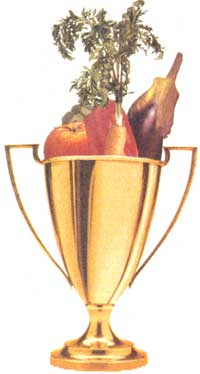

PHOTO ABOVE: ROBIN THOMAS
Four varieties of corn. The earliest is second from the right; the second to ripen is on the left. They are sperated by the lates, Silver Queen. The third variety to mature is on the right. Separating them this way decreases the likelihood they will cross-pollinate.